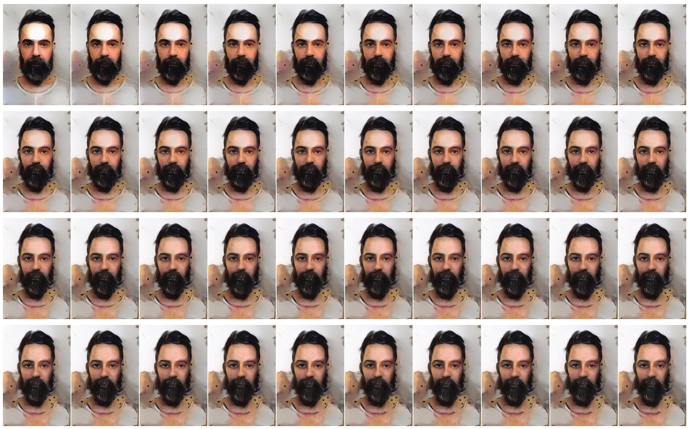

Quem Sou Eu Se Não Você Em Mim
2016–2017
Fotografias

Fabiana
- Dimensões
- Políptico de 40 imagens de 90 × 135 mm cada
- Série
- Quem Sou Eu Se Não Você Em Mim
- Ano
- 2017
Quem Sou Eu Se Não Você Em Mim é uma série desenvolvida entre 2016 e 2017 durante a pesquisa de mestrado do artista. As obras foram produzidas por meio de redes neurais convolucionais (CNNs), utilizando a ferramenta Deep Style, desenvolvida pelo Google em um período anterior à popularização dos sistemas contemporâneos de inteligência artificial generativa.
A série parte de um autorretrato realizado aos quarenta anos de idade. Essa imagem foi combinada com retratos de pessoas próximas ao artista, incluindo familiares e amigos, por meio de um processo iterativo de transferência de estilo. Em cada trabalho, a fotografia de uma dessas pessoas era utilizada como referência visual para transformar o autorretrato original. O resultado obtido era então reaplicado sucessivamente ao mesmo retrato de referência, repetindo o procedimento quarenta vezes consecutivas.
Cada políptico reúne quarenta imagens organizadas em sequência. Em vez de representar uma fusão instantânea entre dois indivíduos, a série registra um processo gradual de transformação. Ao longo das iterações, características visuais associadas ao retrato de outra pessoa atravessam progressivamente a imagem inicial, produzindo um estado intermediário em que identidade, memória e reconhecimento tornam-se instáveis.
O título da série refere-se à ideia de que a identidade não é constituída de forma isolada, mas através das relações que estabelecemos ao longo da vida. As transformações registradas pelas redes neurais operam como uma metáfora visual para os modos pelos quais familiares, amizades e afetos participam da construção de quem somos.
Realizada em um período inicial das pesquisas artísticas com aprendizado de máquina, a série explora as redes neurais como dispositivos capazes de tornar visíveis processos de influência, assimilação e transformação que atravessam as relações humanas. As obras podem ser apresentadas como sequências animadas ou como polípticos impressos em papel Hahnemühle Photo Rag 308 g/m². Uma das sequências integrantes da série foi exibida no festival Ars Electronica em 2017.